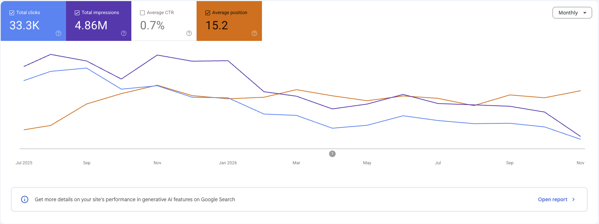

SEO / AEO Growth · BEP Group
Building search authority from one page
Turned BEP's agency website into an owned discovery system across glossary content, commercial articles, service pages, PR, and social distribution.
- Business
- Digital agency
- Market
- Thailand
- Role
- Website & organic growth owner
- Period
- 17-month reporting window
Google Search clicks
Search impressions
Pages in the content ecosystem
Across three priority queries
Challenge
An unknown agency needed to earn discovery without a paid acquisition budget.
BEP began with limited brand recognition and a single-page website. Competing for broad agency terms alone would have placed the business against established firms with stronger authority and larger media budgets.
The opportunity was to turn the website into a useful knowledge and service ecosystem—capturing customers as they learned a concept, evaluated cost, and searched for a provider.
My ownership
I owned the website roadmap, organic strategy, and the system connecting content to demand.
Expanded the site from one page to 200+ glossary, blog, service, work, and tool pages with clear search intent and internal pathways.
Mapped Thai queries, shaped briefs and direct-answer structures, and connected informational content to relevant commercial pages.
Used PR, social content, internal linking, and owned expertise to strengthen brand visibility beyond individual rankings.
Strategy
Own the complete search journey—not one keyword.
Answer specialist questions clearly
Built a glossary layer for concepts such as Domain Authority, giving search engines and answer engines concise, structured explanations.
Capture commercial research before the shortlist
Created practical articles around budget and decision questions, including how much a business website costs.
Align service pages with high-intent demand
Expanded focused service pages around branding, website, marketing, and production needs so discovery could lead directly to consultation.
Support owned content with external signals
Connected PR coverage and social distribution with a growing internal content network to reinforce expertise and brand discovery.
A broad content system produced measurable search visibility
Google Search Console totals cover July 2025 through November 2026.

Result
33.3K clicks and 4.86M impressions across a 17-month window, with priority informational, commercial, and service queries reaching positions one and two.
Visibility across the full intent ladder
The strongest proof is not one viral article—it is ranking across different jobs customers need search to do.
What this demonstrates
Organic growth compounds when education, commercial intent, service relevance, and brand authority operate as one connected system.